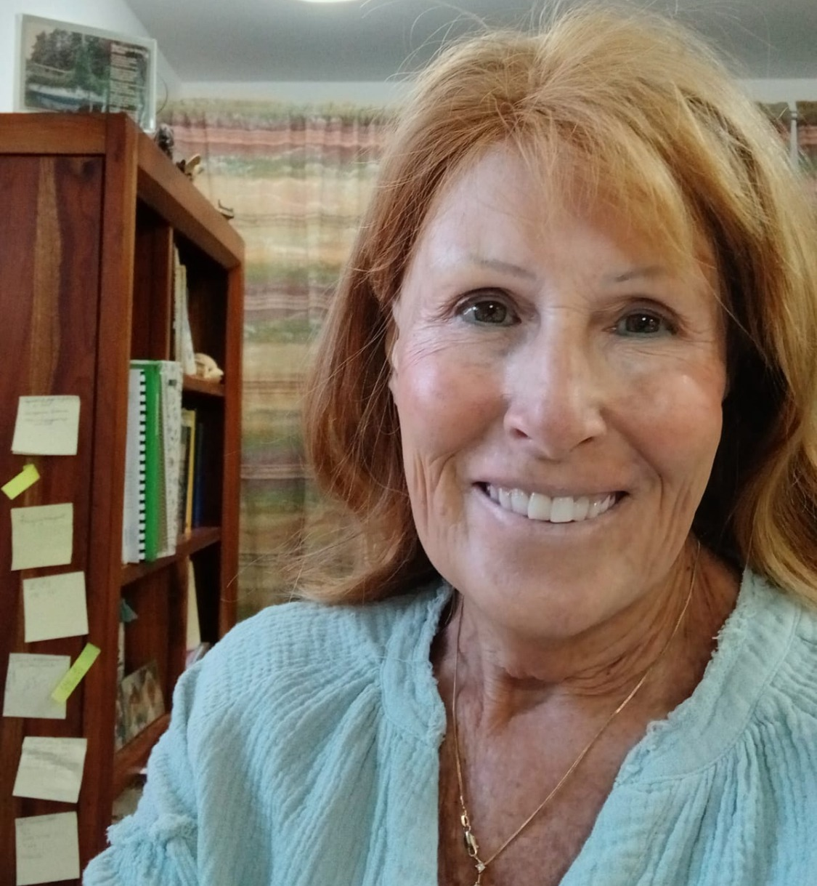

Volunteer stories
Jill Dubler
My husband and I arrived in Volcán about three years ago. Two years ago I began helping Biblioteca San Benito. I have done many of the jobs needed to restore books saved from the old library, but cataloguing is my real passion. I share this work with Ed Simmons.

Cataloguing
Each book is entered into our system so it can be searched in several ways. I work at home, so my husband and I move boxes from the library “office.” I have had as many as 7–10 large boxes at once.
Four partner libraries let us use their databases. I first search by title, author, publisher, ISBN, and so on. If the book is there, we reuse some of that data and check it. The form includes ISBN, author, title, place and date of publication, publisher, pages, illustrations, and maps. We measure the book in centimetres and note series, language, a summary, awards, subjects, and the illustrator.
The second page is how we shelve it: Dewey Decimal class, fiction, juvenile, early reader, adolescent, reference, biography, barcode, and estimated replacement cost.
What if the book is not in those libraries?
We create the record from scratch. Many records have no cover photo, so we look on Google, Amazon, eBay, and elsewhere. One book can take 5 to 20 minutes.
Spanish versus English
Spanish books are seldom in the partner libraries, so they usually start from a blank form and we translate the record into both languages. People say children’s books help you learn a language. They are right!
We are going to have an amazing selection in Volcán’s new Biblioteca San Benito, and I am grateful to be part of it.